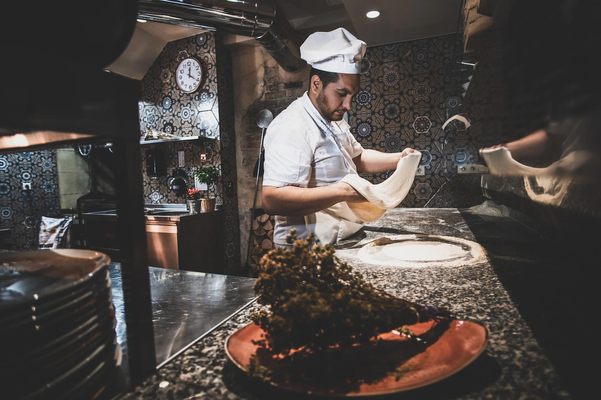

Sobre nosotros
Friends nace de la mano de dos amigos que emprendieron esta cadena de pizzeria con la idea de que sea amigable para todo tipo de comensales, desde parejas, a grupo de amigos. Ofrecemos diferente variedad de pizza segun la sucursal. Friends "M" se especializa en la mejor y mas rica pizza al molde con mucho queso muzzarela, y por otro lado, tenemos Friends "P" con su toque italiano, pizza a la piedra con su crocantes caracteristico.
